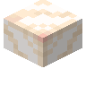
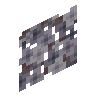
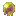
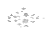
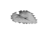

#eternal_starlight:water_crystal_ingredients
物品标签 · 23 个已收录成员
标签成员 (23)
 冰
冰minecraft:ice
 浮冰
浮冰minecraft:packed_ice
 蓝冰
蓝冰minecraft:blue_ice
 海带
海带minecraft:kelp
 海草
海草minecraft:seagrass
 海泡菜
海泡菜minecraft:sea_pickle
 渊海果
渊海果eternal_starlight:abyssal_fruit

海球花eternal_starlight:orbflora
 螺旋藻
螺旋藻eternal_starlight:spiral_kelp

海蔷薇eternal_starlight:sea_rosa海烛草
eternal_starlight:wick_grass

辉灯茎eternal_starlight:lumenstem环笼草
eternal_starlight:circulush
 海黏菇
海黏菇eternal_starlight:marimold石网草
eternal_starlight:stonett灯草
eternal_starlight:luminis凌灯草
eternal_starlight:glowlis浮光苗
eternal_starlight:gloreed星光海草
eternal_starlight:starlight_seagrass铃泡菜
eternal_starlight:jingling_pickle

月光浮萍eternal_starlight:moonlight_duckweed

月光睡莲eternal_starlight:moonlight_lily_pad星照睡莲
eternal_starlight:starlit_lily_pad
使用该标签的配方


原始 JSON
{
"type": "minecraft:crafting_shaped",
"category": "misc",
"key": {
"C": {
"tag": "eternal_starlight:water_crystal_ingredients"
},
"S": {
"item": "eternal_starlight:red_starlight_crystal_shard"
}
},
"pattern": [
" S ",
"SCS",
" S "
],
"result": {
"count": 1,
"id": "eternal_starlight:water_crystal"
}
}